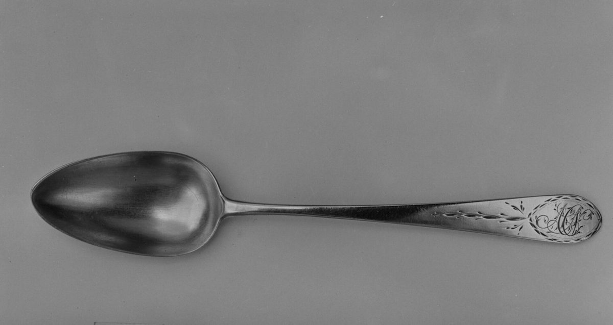

制作側の連想
スプレーガンを、真横から一台
このサイトは、塗装に使うスプレーガンを真横から描いた図に見立てて作りました。前から後ろへ、六つの部位に番号をふっています。制作側の連想で、お店の理念・由来とは無関係です。実際の製品の構造や仕様を示すものでもありません(ここでは上に塗料カップがのる、一般的な形を例にしています)。
凡例
六つの部位
- 1エアキャップいちばん前にある、霧の形を整える先端の部品。左右の小さな出っぱり(ホーン)が目印です。
- 2塗料カップ上にのる、塗料を入れる容器。ふたがついています。
- 3トリガーグリップの前に下がる、指で引く引き金形のレバー。
- 4パターン調整ダイヤル胴の上の後ろ寄りにある、吹き付ける形の幅を変えるつまみ。
- 5塗料調整ノブ胴の後ろ端にある、塗料の出る量を変えるつまみ。
- 6エア接続口グリップの下の端にある、空気を送るホースをつなぐ口。
ギャラリー(イメージ)
食卓と花の写真





写真はイメージです。お店のものではなく、お店で提供している商品を示すものでもありません。
ご案内
お店のこと(確認できたものだけ)
| 所在地 | 〒983-0045 宮城県仙台市宮城野区宮城野1丁目9-3 |
|---|---|
| 電話 | 準備中 |
| 営業時間 | 準備中 |
| 定休日 | 準備中 |
| ご予約 | 準備中 |
| 駐車場 | 準備中 |
| SNS | Instagram @von_jp |